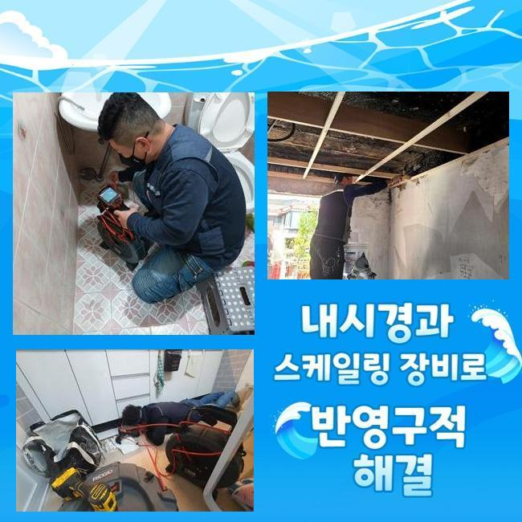
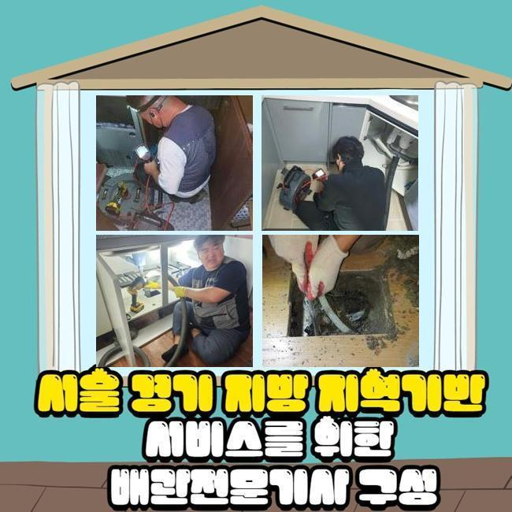
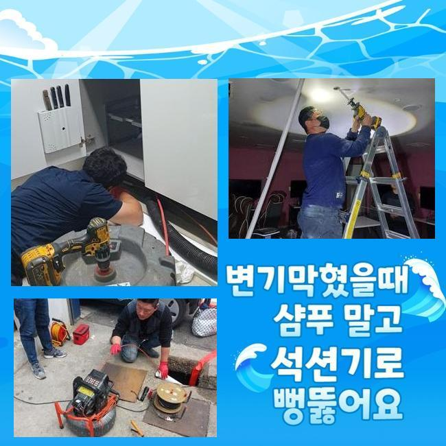
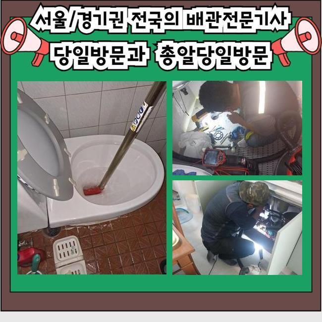
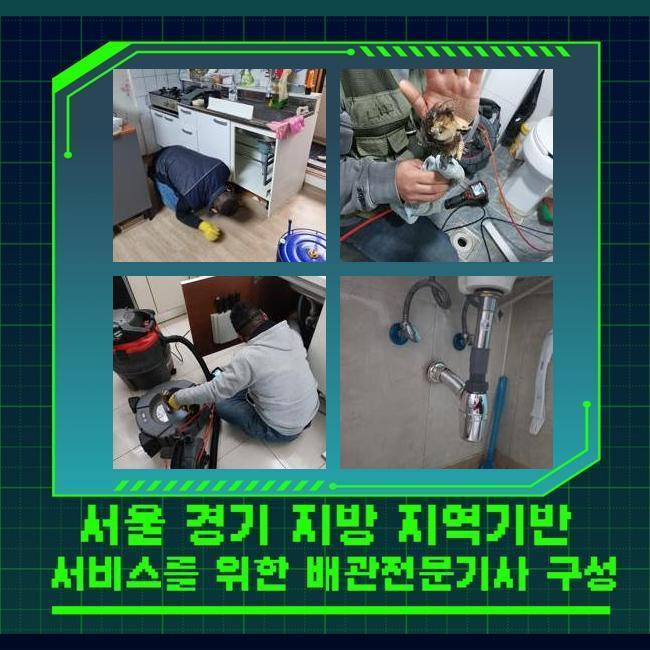
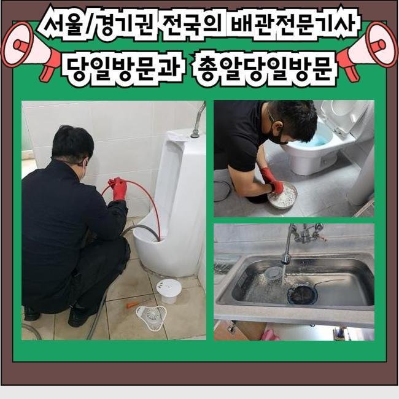

🏠 중구 신당동하수도역류 남창동 하수구뚫어주는업체 설비공사
용인 하수구막힘 전문 시공 후기

📋 작업 개요
- 위치: 용인
- 서비스 유형: 하수구막힘, 배관막힘, 역류해결, 뚫는업체, 배관청소, 고압세척, 설비공사
- 작업 일시: 2025. 4. 18. 9:48
- 업체명: 하수구수사대 (010-5615-2118)
🔍 문제 상황
중구 신당동하수도역류 남창동 하수구뚫어주는업체 설비공사
저희의경우 며칠전 상가빌딩의 통수오류를 시정해내고자 방문을 드렸는데요
상담을 진행했던 의뢰자의 설명을 듣고 저희전문진은 상업시설의 화장실쪽에서 계속적인 이물질 역류 통수장애를 해결하고자 해당 장소에 도달했어요
의뢰인은 이것때문에 다양한 민원들을 감당하고 계셨었죠
해당 증상을 조속히 대응하고자 저희전문진은 도착한 후 배수관을 살폈죠
꾸준히 야기되는 오염물들이 하수도를 좁혀버린걸 체크하고 빠르게 시정했는데요
그간의 사례로 판단해보니 이런 오염물들은 8할 이상이 공동배수관에서 목격되므로 오늘과 같은 문제들이 생겨나버린것으로 판단했는데요
그리하여 조속히 외부라인으로 나간 후 문제들을 야기시키는 배수관의 부위를 파악하고자 검수들을 실시했죠
탐지장치를 사용해서 배관의 스팟을 특정시켰고 내측을 살폈더니 오염된 정도가 만만치 않았어요
내부에서 시작되어 축적된 오수들의 잔해들과 외측에서 쏟아진 흙까지 엉켜있었죠

🔎 원인 분석
💡 전문가 진단: 정밀 진단 장비를 사용하여 슬러지의 고착 여부를 판명하고 타격/세척 작업을 실시했습니다.
이러한 통수장애를 시정해내고자 빠르게 적합한 대응을 하게 되었고 상가건축물의 시설을 장기간 쓸 수 있게 하였습니다
관로에 잔해들이 누적될 시 많은 통수오류를 유발시키기에 해결들을 미루지않는게 실시되야했습니다
검수하니 이물들이 구간별로 자리하고 있는걸 확인하게 되었습니다
오염물들은 오랫동안 누적될 시서 뭉치의 모습으로 크기를 키워가고있었습니다
이것때문에 배수정체가 나타났다고 생각했어요
이를 확인하고, 여러기기들로 배수구를 청소해보기로 했죠
장치 사용을 해서 관로를 세척해줄때에는 고압수청소가 필요하죠
예를들어 집수시설에 흡착물들이 자리하고 있으면 전형적인 방식으론 무리일 수 있죠
그러므로, 고압수청소로 안정적으로 슬러지를 없애주는것이 실시되야했습니다
세척을 거치면 하수관을 깔끔히 보존가능하고 트러블들이 쌓이는 것을 미리 예방합니다
그렇기에, 관로를 세척해줄때에는 고압수청소를 염두에 두시는 것도 권장드립니다

🔧 작업 과정
더 나아가 잔해물이 축적되지 못하게 때에 맞춰 유지시켜주는게 필요하고 적합하게 대응한다면 원활하게 통수장애를 해결할 수 있습니다
그리하여 결함들이 발생했을 때는 안정적인 대응이 대두되고 전문인들의 도움들로 튼튼한 환경구축을 지켜내는게 중요한데요
기술적인 측면이 먼저겠지만 세척과정을 통해 배관을 청결하게 유지시키는게 실용적인 방식으로 작용할 수 있어요
모든 과정을 제대로 진행시키기 위해선 구조적설계와 특성들을 파악해야해요
배수관은 여러개의 소재로 구성되어있고 기간이 지나면서 튼튼함이 저하되므로 무리를 이용하는건 좋지않죠
배수관의 컨디션과 현장의 특수성을 파악해 적합한 방식을 통해야하겠습니다
이런 요소들을 준수한다면 고수압의 방식으로 최적의 배관컨디션을 꾀할 수 있습니다
해당 시점에 이용한 석션도구는 흡입을 실시해 배수관의 잔재들을 안전하게 없애주었습니다
석션장치에 빨려나온 오염원의 잔해를 보았으며 내시경을 삽입해 심층부까지 살펴보니 고착물이 상당하여 배수과정이 순탄치 않았습니다
이 부분은 염두에 두고 고압수청소로 저희의경우 배수로에 발생한 배수정체를 조속하고 실용적으로 해결해주고 배수관의 규모들과 오염물의 위치들을 고려해서 작업들을 이행한 결과 온전한 하수관컨디션을 지켜냈어요
이것은 대다수 고착물이 군데군데 침전되서 쌓이는 증상으로서 안에서부터 좁아진 탓에 통수들이 중단되는 트러블이 수렁으로 빠지기도합니다
이럴땐 전문업체들의 능력을 바탕으로 내시경장치를 사용해 구석구석 진단하고 확실한 까닭들을 없애주는것이 중요한데요
고수압세척들을 이행함과 동시에 저희의경우 진입부로 세척라인을 밀어넣어주고 초입의 포인트에선 뭉친 기름때가 한꺼번에 제거되는것을 보았습니다
이전과는 다르게 기름때가 위치해있는 3미터 라인에선 이물들의 양상을 보고 물줄기들의 세기들을 조정하여 세척들을 실시했습니다
기름고착의 흡착정도가 심했기에 온수 고수압세척들을 진행시켰는데 안전관련 요소들을 상기하고 기름때들을 제거시켰어요
막혀버리는 문제들은 예기치못하게 야기되어 때론 감당하기 힘든 고충을 발생케해요
오수가 안빠지는 문제의 경우 8할 이상이 흡착물들이 점차 쌓여 나타나기에 조속하게 통수오류를 풀어주어야합니다


✅ 작업 완료
의뢰자의 불편들을 잠재우기위해 빠르게 해결하겠습니다
막힘들을 조사하고 계획들을 정하여 청소에 심혈을 기울이죠
신속한 시공이 관건이기에 오랫동안 내버려두는 일은 없어야해요
솔루션이 필요하다라면 언제라도 전화주세요
트러블들이 발생하면 조속히 대응하여 안전성을 갖추고 온전한 컨디션을 지켜낼게요




⚠️ 하수구 배관 막힘 예방 및 관리 가이드
- ✅ 머리카락, 비닐, 물티슈 등 물에 분해되지 않는 이물질은 하수구 유입을 절대 금지해 주세요.
- ✅ 하수구 거름망을 씌우고 모여진 이물질은 주기적으로 쓰레기통에 바로 비워주셔야 합니다.
- ✅ 배관 노후가 심할 경우 이물질이 더 쉽게 걸리므로 주기적인 배관 세척(고압세척 등)을 권장합니다.
- ✅ 작업 후 1년 이내 재발 시 하수구수사대에서 무상 A/S 보증 서비스를 제공합니다.
💡 핵심 정리
- 확실한 장비 작업(내시경 점검 및 샤프트 스케일링)으로 원인을 뿌리 뽑습니다.
- 작업 후 1년 이내에 동일한 부위 재발 시 100% 무상 A/S 서비스를 보장합니다.
- 서울 · 경기 · 인천 전 지역에 24시간 언제든 긴급 출동할 수 있도록 항시 대기 중입니다.
❓ 자주 묻는 질문 (FAQ)
🚨 용인 하수구막힘 문제로 고민이신가요?
정확한 원인 진단과 확실한 시공으로 재발 없는 해결을 약속드립니다.
24시간 긴급 출동 | 서울 · 경기 · 인천 전지역 | 1년 내 재발 시 무상 A/S